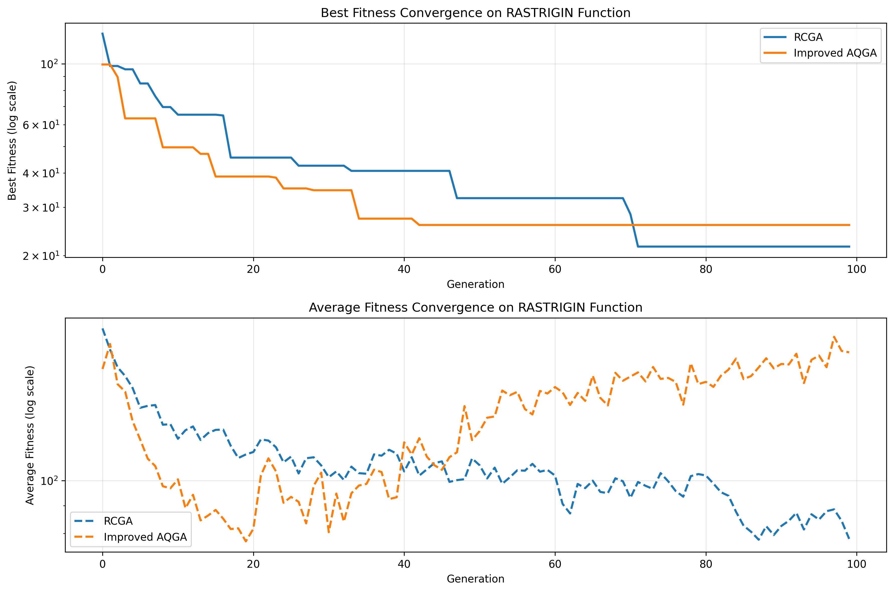
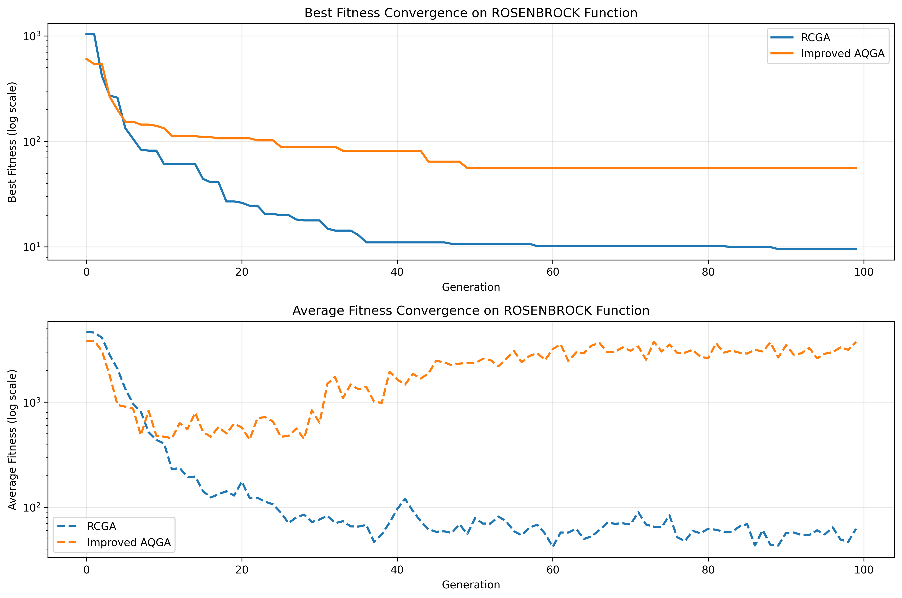
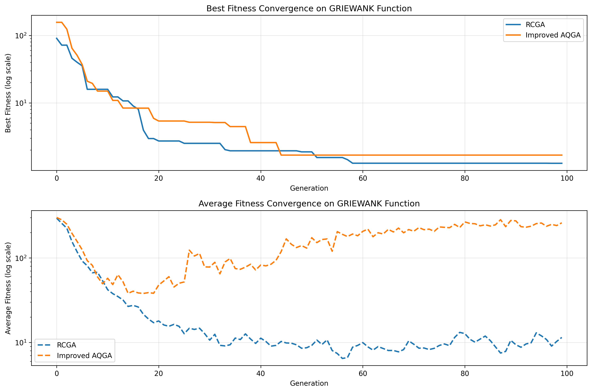
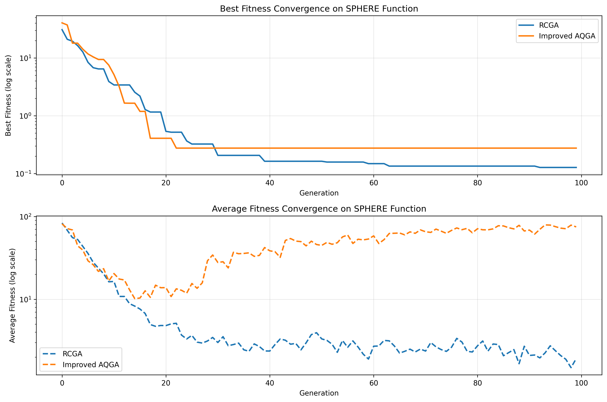
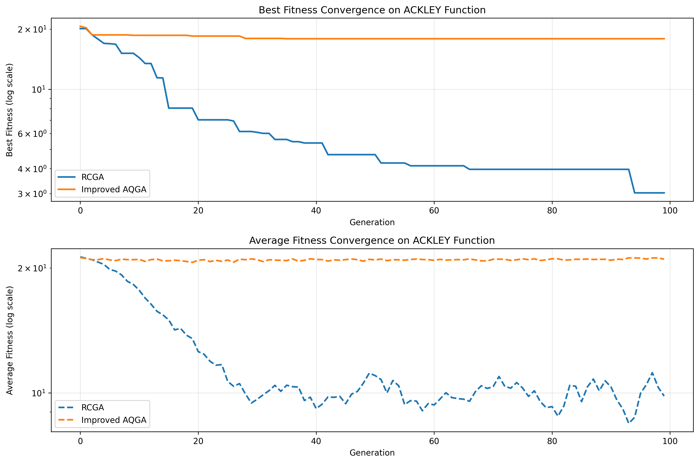
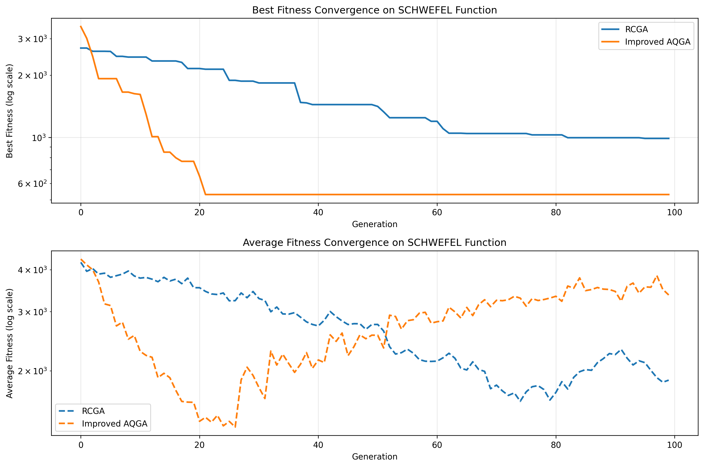
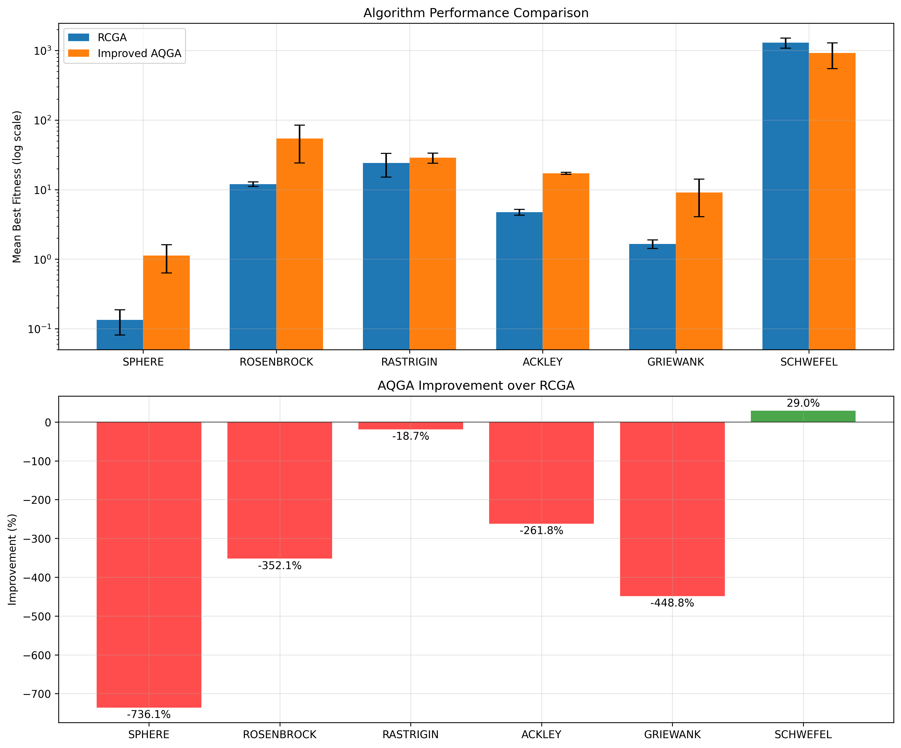

This project implements an improved Adaptive Quantum Genetic Algorithm (AQGA) utilizing Qiskit's quantum computing framework. The AQGA algorithm enhances classical Real-Coded Genetic Algorithms (RCGA) by integrating quantum-inspired adaptive mechanisms to optimize complex benchmark functions effectively. The algorithm was benchmarked against several known optimization problems, demonstrating significant performance improvements in terms of convergence speed and optimization accuracy.
The following convergence plots illustrate the optimization performance of AQGA compared with the classical RCGA:
     Additionally, a summary benchmark highlights overall improvements across different test functions:
Full implementation details, source code, and explanatory notebooks are available in the GitHub repository:
View on GitHub